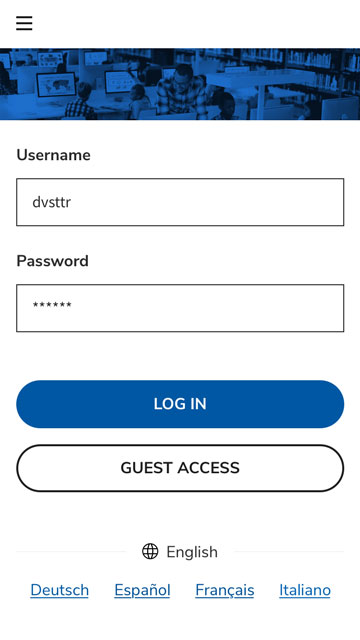
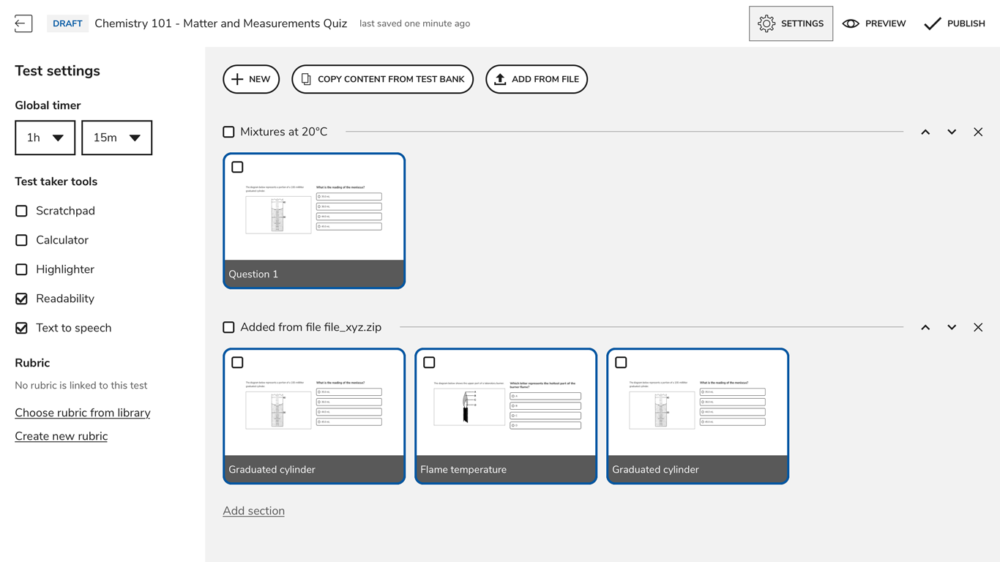

TAO assessment platform
About Open Assessment Technologies & TAO
Powered by the OAT Open Source philosophy and driven with a commitment to the common good in education, TAO has evolved into the leading open source assessment solution for education and employment, with users in 194 countries. To date, TAO has delivered over 100 million tests in more than 30 languages worldwide.
Roles
- UI Design
- Prototyping
- UX
- User Testing
- Copywriting
As I arrived at OAT, joining a freshly created design team composed of two UX designers, my first project was to design a "next-gen" test taker facing UI for TAO. The primary goals were to provide proper user experience, a minimalistic distraction-free design and accessibility by default. All this while maintaining a complete compliance with the QTI standard. The project was designed following WCAG 2.1 AA Standards, Section 508 Guidelines, Universal Design principles and was releasded as TAO advance. In parralel, I was tasked to redesign all the interactions that the QTI standard provides.
During the design process of TAO Advance I've created a design system (SOLAR) which was used on other projects as well and continued to grow ever since.
Alongside this, I worked on the creation of multiple other products for the company notably:
- TAO Grader which provides open response grading and grading projects management for teachers and scoring professionals.
- An unreleased project that focused on redesigning the experience of Tao authoring, providing test authors with better layout functionality and templating.
- An unreleased project which was a complete solution for smaller-scale assessement deployments.
In addidtion to that I led the Implementation of documentation, versioning and developer handoff principles for the Design team.
TAO Advance
- 
-

TAO Grader

uSmall scale assessment project (unreleased)
- 
-

-